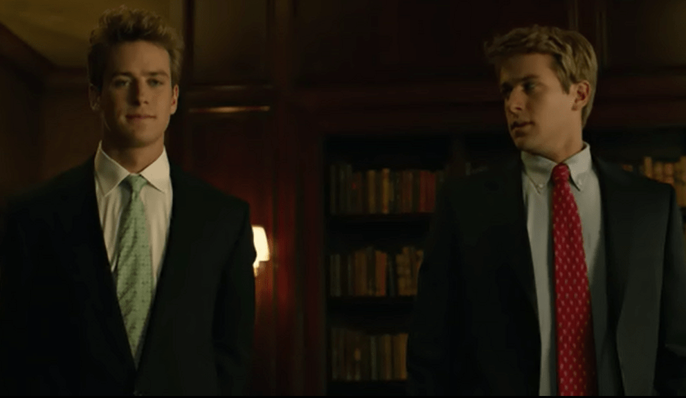
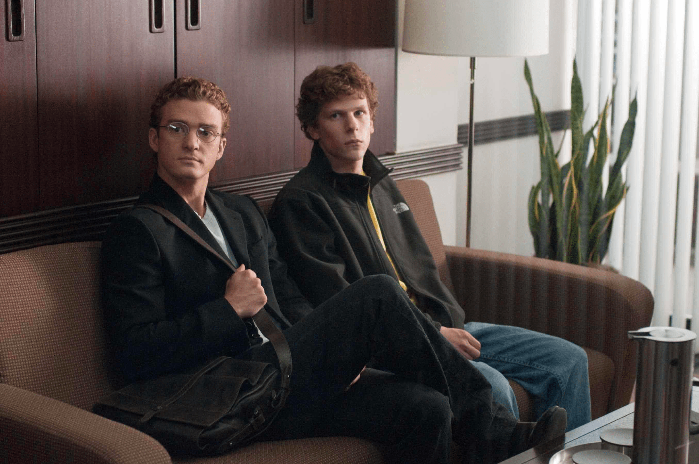

The Social Network
le film retraçant la création de Facebook ...
The Social Network est un film réalisé par David Fincher. On y apprend comment Facebook voit le jour en 2004. Le film commence en 2003, le soir dans un bar. Mark Zuckerberg, étudiant à Harvard, se fait quitter par sa copine. Il rentre donc ivre à son dortoir. Il insulte aussi sa copine sur son blog (accessible par tous). Lui vient donc l’idée de créer un site internet. Dans ce site, on pouvait choisir entre deux filles. Les filles étaient toutes des étudiantes aux environs. Au bout de quelques heures, près de 20 000 personnes vont aller sur le site. Zuckerberg avait réellement cartonné. Il va malgré cela être sanctionné par le conseil correctionnel d’Harvard.
"Mark Zuckerberg", image issue du film
Ce succès va le mener aux frères Winklevoss. Ils veulent passer un marché avec Zuckerberg pour être leur programmeur. En effet, ils souhaitent créer un réseau social. Mark Zuckerberg va donc accepter. Son créateur est Mark Zuckerberg ainsi que Eduardo Saverin, le co-fondateur. Le site est créé pendant leur cursus scolaire à Harvard. Le réseau social obtient un succès immédiat auprès des étudiants d’Harvard. Cependant, malgré son génie, ils sont accusés d’avoir volé l’idée. Les victimes de ce plagiat sont les frères Winklevoss. En effet, Zuckerberg devait être leur programmeur pour leur idée assez similaire. Il a accepté puis annulé 40 jours après. En réalité, il créait « The Facebook ».
"Les frères Winklevoss", image issue du film
Petit à petit, le réseau social vient aux oreilles de Sean Parker. Il est le co-fondateur de Napster, un service de musique en streaming. Étant un expert commercial, il va aider Zuckerberg à gérer son entreprise. Pendant ce temps, Eduardo ira à New-York rencontrer des potentiels actionnaires. Cependant, Sean Parker va rapidement prendre la place d’Eduardo. À son retour de New-York, Eduardo comprend que Sean se joue de lui.
"Sean Parker et Mark Zuckerberg", image issue du film
Les mois passent, Mark a avancé dans la programmation de son site. Grâce à Sean, l’entreprise va trouver des nouveaux locaux. De plus en plus de personnes seront aussi embauchés. Dans l’équipe, chacun touche un pourcentage de la recette générée. Eduardo Saverin avait comme tout le monde signé son contrat. Mais Sean a embobiné Mark, et a piégé Eduardo. Au bout d’un moment, Eduardo va voir son pourcentage chuter. Il va donc partir de l’entreprise, déçu par Mark. Sean avait réussi son coup, et pris la place d’Eduardo. Le destin va néanmoins le rattraper le soir même ! Il va se faire arrêter lors d’une soirée bien trop festive. En effet, il consommait des substances illicites en compagnie d’individus mineurs. Ce jour-là, Facebook célébrait son millionième utilisateur.
"Un million de personnes inscrites", image issue du film